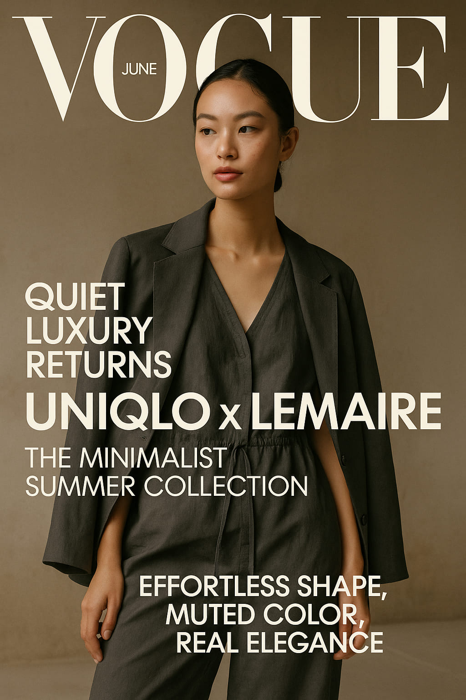

UNIQLO x Lemaire Returns: The Quiet Luxury Drop That Defines Summer 2025
Minimal, elegant, and sharper than ever—the new Uniqlo U by Lemaire summer capsule launched yesterday, and it’s already redefining wearable design for the season.
On June 4, UNIQLO quietly launched its latest collaboration with French designer Christophe Lemaire, and once again, fashion insiders are calling it one of the most refined drops of the summer. The collection is part of the Uniqlo U line—a design-driven sub-label led by Lemaire that has become synonymous with elevated basics, architectural ease, and democratic price points.
“We design for clarity. No noise, just form and flow.” — Christophe Lemaire
What’s New in the 2025 Collection
The Summer 2025 capsule builds on the signature language of the collaboration: loose silhouettes, sculptural volume, earthy tones, and quiet utility. This season introduces:
- Boxy sleeveless jackets with soft technical finishes
- Drawstring tunics with deep side slits
- Oversized tailored bermudas in stone and clay
- Airy cotton-linen blends in slate blue, sand beige, and charcoal green
The standout piece? A minimalist one-piece jumpsuit in matte terracotta, designed with tapered ankles, wide shoulders, and a concealed belt tunnel that turns comfort into contour.
Visual Philosophy
Lemaire’s design vision always leaned toward reduction, not absence. The 2025 collection continues this ethos by simplifying garments until only essential lines remain. Shirts are collarless, cuffs are hidden, closures are subtly embedded. Every piece aims to float, not cling.

Slate linen against warm light—Lemaire’s summer palette remains calming but grounded.
Who’s Wearing It?
From creative directors in Berlin to editors in Tokyo, the Uniqlo x Lemaire uniform is already back on the sidewalks. The appeal lies in its adaptability—it’s modest but bold, gender-fluid, and built for movement. Style Atlas spotted early adopters pairing the collection with hand-woven leather bags, minimal trainers, and statement eyewear. No logos needed. Just intention.
“It’s like wearing silence. But with structure.” — Maya G., stylist in Paris
The Styling Edge
The trick to making these pieces resonate visually? Layering and light. The fabric reacts to natural sunlight, shifting tone and texture with each movement. Whether styled over tank tops or under cropped blazers, the garments invite play. Accessories like sculptural bangles or slim neck scarves complete the quiet drama.

Modular minimalism: built to layer, move, and breathe with your day.
Price, Accessibility & Global Drop
As always, the biggest advantage of this collaboration is its accessibility. Prices range from €29 to €89, with most key garments under €60. The drop is already available in Japan, France, Germany, and the U.S., with global online stock expected to sell out by the end of the weekend.
Editorial Verdict
In a season dominated by digital excess and fast silhouettes, Uniqlo x Lemaire reminds us of the elegance of pause. Of restraint. Of space. It’s a wardrobe not for attention, but for presence. For those who walk softly—but with incredible style.
Words by Style Atlas